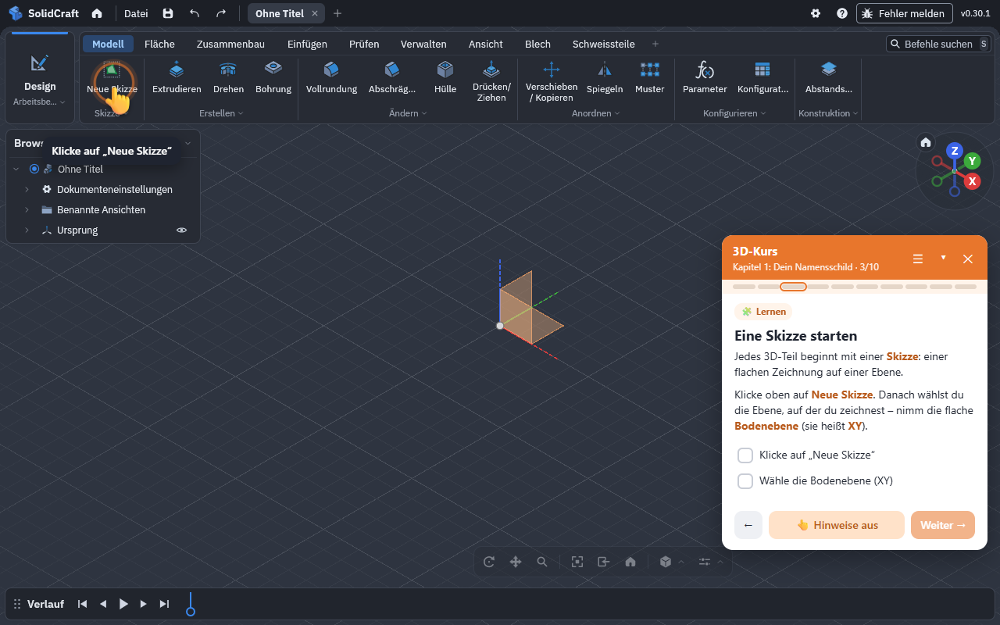
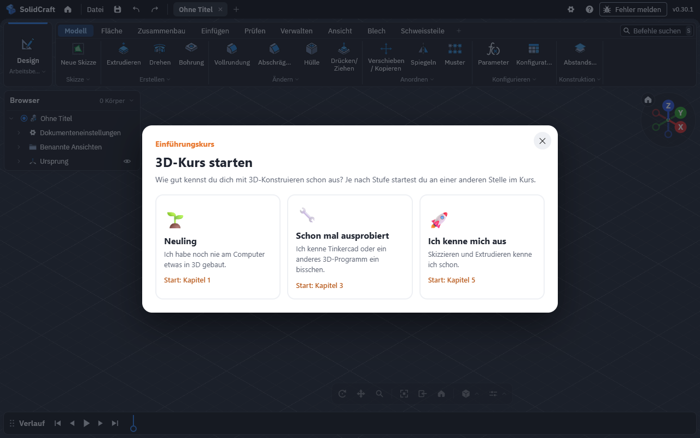
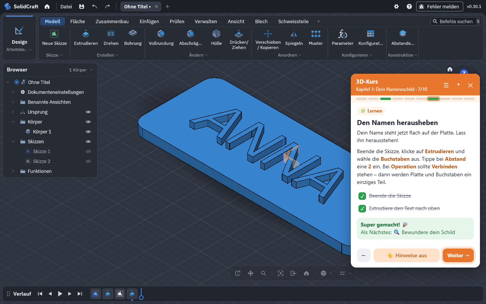
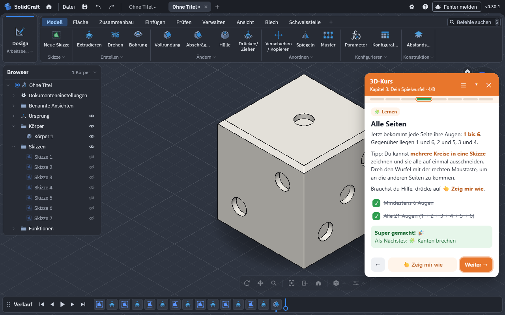
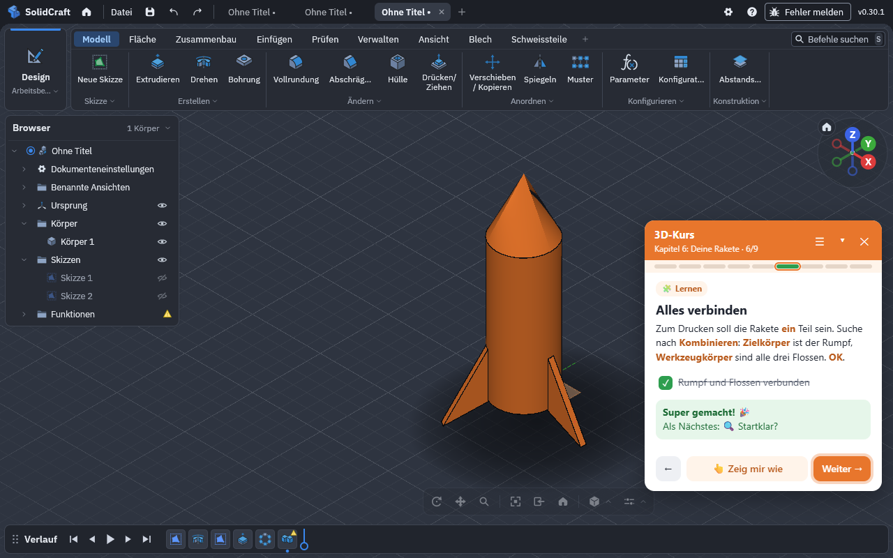

Ein geführter Kurs für Kinder von 8 bis 14, direkt im kostenlosen Web-CAD SolidCraft. Eine Hand zeigt, wo geklickt wird – und jedes Kapitel endet mit einem Projekt für den 3D-Drucker.

SolidCraft ist ein leistungsfähiges, kostenloses CAD-Programm im Browser – mit Hunderten Werkzeugen. Für Kinder ist das am Anfang viel. Der Kurs nimmt sie an die Hand, ohne etwas zu verstecken.
Eine animierte Hand zeigt auf den richtigen Button, das Feld im Dialog oder die Fläche im 3D-Modell.
Die Erweiterung erkennt selbst, ob die Skizze gezeichnet, die Platte extrudiert oder das Loch gebohrt ist – mit Konfetti.
Vom Namensschild bis zur Rakete. Jedes Kapitel endet mit einem STL-Export für den 3D-Drucker.
Neuling, schon mal ausprobiert oder Profi – alle Kapitel bleiben jederzeit erreichbar.
Der Kurs spricht automatisch die Sprache von SolidCraft, damit die Button-Namen immer passen.
Kein Konto, kein Server, keine Datensammlung. Der Fortschritt bleibt im Browser.
Alle Bilder sind echte Aufnahmen der Erweiterung in SolidCraft.




Jedes Kapitel bringt ein oder zwei neue Werkzeuge mit und endet mit einem eigenen Projekt – zusammen 50 Schritte.
Eine Platte mit dem eigenen Namen, der heraussteht. Die Grundlagen: Skizze, Rechteck, Extrudieren, Text.
Runde Ecken und ein Loch für den Schlüsselring.
Ein 20-mm-Würfel mit allen 21 Augen – gegenüber ergibt es immer 7.
Ein ausgehöhlter Zylinder mit Extrafach – zwei Körper werden eins.
Zwei Teile, die wirklich zusammenpassen: mit Spiel und ein bisschen Mathe.
Ein halbes Profil wird zum runden Rumpf gedreht, drei Flossen im Kreis verteilt.
Läuft in Chrome, Edge und Brave am Computer. SolidCraft selbst braucht kein Konto.
chrome://extensions bzw. edge://extensions öffnen und den Entwicklermodus einschalten.Nein. Es ist ein unabhängiges Open-Source-Projekt. Es nutzt die offizielle Browser-Schnittstelle von SolidCraft und verändert nichts an Ihren Modellen.
Nein – weder für SolidCraft noch für die Erweiterung.
Am besten am Computer mit Maus. Auf Chromebooks mit Chrome funktioniert die Erweiterung ebenfalls; Tablets werden nicht unterstützt.
Deutsch und Englisch. Der Kurs folgt der Sprache von SolidCraft; im Kursmenü lässt sie sich umstellen. Weitere Sprachen können ergänzt werden.
Nein. Die Prüfungen sind großzügig – eigene Größen und Bauwege sind ausdrücklich erlaubt.
Die Erweiterung sammelt keine Daten, braucht kein Konto, sendet nichts an Server und speichert den Kursfortschritt nur in Ihrem Browser. Ausführliche Datenschutzerklärung